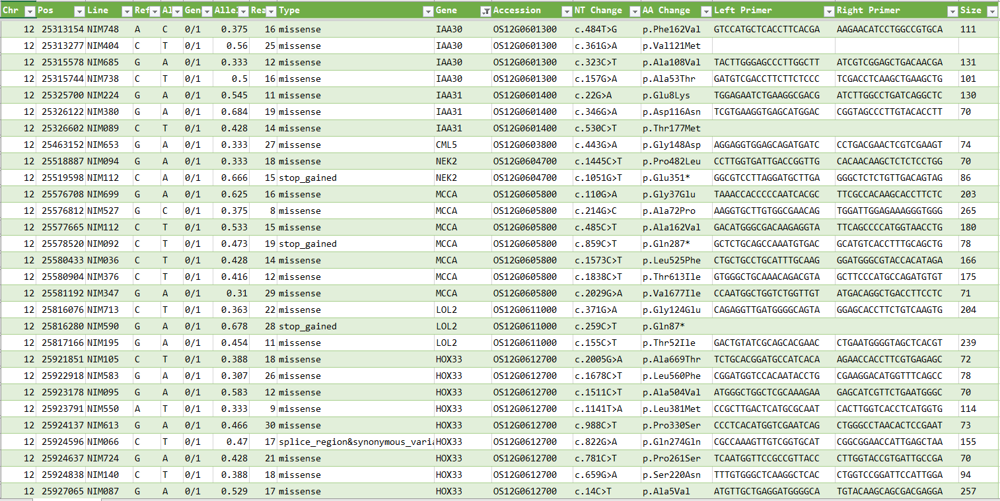

イネ(日本晴)MNU変異系統のSNP多型一覧
[日本語トップページへのリンク]
NBRP(九州大学)から配付されている日本晴メチルニトロソウレア(NMU)処理変異系統のNGS配列をPEDで検出した多型の一覧です。
- 図をクリックすると拡大されます。

- 染色体ごとに分けられた一覧のデータは、
 よりダウンロードできます。
よりダウンロードできます。
- 変異部分を増幅するプライマー対の配列も一覧に含まれています。
- snpEffを用いて、多型に関する注釈を加えてあります。
- カラム順は、染色体番号、位置、系統名、リファレンス塩基、変異塩基、遺伝子型、アレル頻度、リード数、変異の種類、遺伝子名、アクセッション番号、遺伝子の変異部分、アミノ酸配列の変異部分、プライマー(左)、プライマー(右)、増幅配列長です。
- 種子はNBRP(九州大学)より入手できます。
- SNPに関しては、MiRiQ databaseで既に公開されています。こちらはBWA-memとGATKを用いて多型検出されています。PEDで検出された多型と比較できます。
MiRiQのみ、あるいは、PEDのみで検出されたSNPもありますので、それぞれ補完的に利用できます。
Excelへのデータの取り込み
- タブ区切りのテキスト形式のファイルとなっています。エクセルに取り込むと便利です。
- SNP List of Rice (Nipponbare) MNU Mutant Linesのページより、mnu.zipをダウンロードしてzipを解凍します。
- エクセルのデータのタブを開き「テキストまたはCSVから」をクリックして目的の染色体のファイルを開きます。
- Power Queryエディタが開いたらColumn6をtext型に指定して「閉じて読み込む」をクリックしてエクセルに取り込みます。
- J列 Gene name あるいは K列 Rap IDのフィルターのプルダウンより目的の遺伝子あるいはIDで絞り込むことができます。
- ナンセンス変異や、フレームシフトの場合、その遺伝子の活性が失われていると考えられます。
- ミスセンス変異の場合は変異の入った部分、あるいは、入れ替わったアミノ酸の種類により活性が低下(まれに増加)することが考えられます。
- 変異部分を増幅するプライマーで交配後代のDNAをPCR増幅して、その部分の塩基配列を調べて変異が導入されたかどうかを確認します。
- プライマーは短めに設定しているので、High Resolution Melting (HRM)解析等での多型検出に有効です。
リファレンス
- Kubo et al. (2024) MiRiQ Database: A Platform for In Silico Rice Mutant Screening. Plant Cell Physiol. 65:169-174. https://doi.org/10.1093/pcp/pcad134
NBRP(九州大学)より入手した系統の解析結果を公表する場合は、この論文を引用してください。
- Cingolani, P., Platts, A., Wang, L. L., Coon, M., et al. (2012). A program for annotating and predicting the effects of single nucleotide polymorphisms, SnpEff: SNPs in the genome of Drosophila melanogaster strain w1118; iso-2; iso-3. Fly, 6(2), 80-92. https://doi.org/10.4161/fly.19695
- 多型検出に用いたPEDの論文: Miyao, A., Kiyomiya, J.S., Iida, K. et al. (2019). Polymorphic edge detection (PED): two efficient methods of polymorphism detection from next-generation sequencing data. BMC Bioinformatics 20, 362. https://doi.org/10.1186/s12859-019-2955-6
- 多型データ:Miyao, A. (2024). SNP List of Rice (Nipponbare) MNU Mutant Lines [Data set]. Zenodo. https://doi.org/10.5281/zenodo.13373529
- スクリプト: https://github.com/akiomiyao/ped/
お問い合わせ
農研機構
宮尾安藝雄 (miyao@affrc.go.jp)